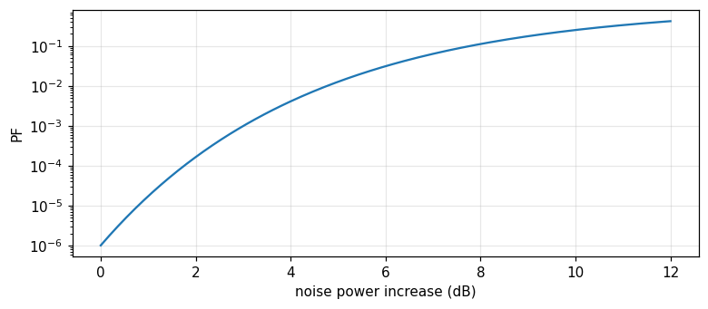
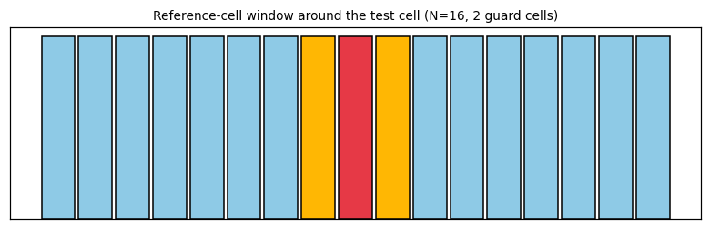

Module 26Barkat, chapters 11 and 12, pp. 627 to 670
Adaptive thresholding: CFAR detection
Why a fixed threshold fails when the background noise changes, the cell-averaging CFAR detector (CA-CFAR), the Swerling target models, the GO-CFAR and SO-CFAR variants for a clutter edge, and distributed CFAR with AND/OR fusion rules (Barkat, chapters 11 and 12).
MODULE 26 · Barkat, chapters 11 and 12, pp. 627 to 670
Adaptive thresholding: CFAR detection
Explain why a fixed threshold fails when the background noise variance is unknown or changes over time, and quantify P_F's sensitivity.
Derive the CA-CFAR detector from the maximum likelihood estimate of the background variance via reference cells, and compute closed-form P_F,P_D.
Describe the general chi-square-family density of the Swerling target models, and recognise Rayleigh at k=1.
Explain the masking effect and the capture effect at a clutter edge, and how GO-CFAR, SO-CFAR remedy each case.
Derive the optimal thresholds for distributed CFAR via a Lagrange multiplier, and compute the global P_D,P_F under the AND, OR fusion rules.
Use the buttons, the dots or the ← → keys to move between slides.
PART 1/5
01
Why a fixed threshold fails
Situation: Additive noise plus unwanted scatter (clutter — from terrain, sea, rain) makes the real radar environment nonstationary, with an unknown background variance.
Complication: With a fixed threshold, P_F=\exp(-\gamma^2/2\sigma^2); just a slight increase in \sigma^2 makes P_F blow up by orders of magnitude — intolerable for data processing.
Resolution: The solution: an adaptive threshold, estimating the local background noise level from neighbouring cells and adjusting automatically — keeping the false-alarm rate constant (CFAR).
Clutter: unwanted scatter
The fixed threshold's dramatic sensitivity
The CFAR idea: an adaptive threshold
1/5 · Why a fixed threshold fails
Clutter: unwanted signal from the environment
In real radar detection, the target is buried in thermal noise plus clutter — the term for any unwanted radar signal from scatterers that are not the target of interest: terrain, sea, rain, birds, insects, chaff (Barkat, pp. 627 to 628). Since the radar's operating environment depends on weather and location, the returned signal is statistically nonstationary, with an unknown variance at the receiver input.
1/5 · Why a fixed threshold fails
A fixed threshold: a dangerously sensitive denominator
With a single pulse and fixed threshold \gamma, the false-alarm probability is P_F=\exp(-\gamma^2/2\sigma^2), with \sigma^2 the total noise variance (thermal plus clutter) (Barkat, pp. 627 to 628). Let P_{Fd} be the design false-alarm probability for a design variance \sigma_d^2; if the actual variance \sigma^2 differs from \sigma_d^2, P_F=P_{Fd}^{(\sigma_d^2/\sigma^2)}.
The false-alarm probability with a fixed threshold
Measured: a 3 dB noise-power rise, P_F up more than 1000-fold
With P_{Fd}=10^{-6}, just a 3 dB noise-power increase (i.e. \sigma^2/\sigma_d^2\approx2) makes the actual P_F rise more than 1000-fold — entirely unacceptable for data processing, whether by computer or human operator (Barkat, pp. 628 to 629, Fig. 11.1). Measured: with P_{Fd} = 1.0e-06, a 3 dB rise gives an actual P_F = 1.0000e-03, a ratio increase of 1000-fold.

Figure 1. The actual false-alarm probability rises exponentially as the noise power increases, for a fixed threshold designed for PFd=1e-6.
1/5 · Why a fixed threshold fails
Radar structure and where the CFAR processor sits
Radar (RAdio Detection And Ranging) transmits electromagnetic energy and extracts target information from the returned echo: range from time delay, direction from a directive antenna, velocity from Doppler shift. The signal processor, sitting between the receiver and the data processor, performs pulse compression, Doppler clutter suppression, and CFAR processing — the CFAR circuit keeps the false-alarm rate constant and relatively low, avoiding saturating the system or the operator (Barkat, pp. 629 to 631).
1/5 · Why a fixed threshold fails
The core idea: estimate the local noise from neighbouring cells
Finn and Johnson proposed using a reference channel: the range cells surrounding the cell under test are used as reference cells, giving a local estimate of the background noise level, from which the decision threshold is adjusted (Barkat, pp. 634 to 635). This is exactly the CFAR (constant false alarm rate) idea: the threshold \"adapts\" to the changing environment, instead of being fixed.
1/5 · Why a fixed threshold fails
Self-check, part 1
What is clutter in the radar context?
With a fixed threshold, what happens to P_F when the noise variance rises slightly?
What is the core idea of CFAR?
Hints: an unwanted radar signal from non-target scatterers; P_F rises by orders of magnitude; estimate the local noise from neighbouring reference cells, automatically adjusting the threshold.
PART 2/5
02
The cell-averaging detector (CA-CFAR)
Situation: The reference cells (leading and lagging the cell under test, separated by guard cells) give N independent identically exponential samples; the sum Z=\sum X_i is the maximum likelihood estimate of the background level.
Complication: Since Z follows a Gamma(N,2\sigma^2) distribution, P_F=1/(1+T)^N in closed form — giving a threshold multiplier T=P_F^{-1/N}-1 independent of the unknown \sigma^2.
Resolution:P_D=[(1+S)/(1+S+T)]^N approaches the ideal Neyman–Pearson performance as N\to\infty — CFAR trades a finite performance loss for not needing to know \sigma^2.
Reference cells, guard cells, the cell under test
Z is Gamma, P_F in closed form
The threshold multiplier T and the detection probability P_D
2/5 · The cell-averaging detector (CA-CFAR)
The detector structure: a delay line and reference cells
The square-law detector's output feeds a tapped delay line forming the reference cells. To avoid signal energy spilling from the test cell into adjacent cells and biasing the clutter estimate, the cells immediately adjacent — called guard cells — are entirely ignored. The reference window U (the sum of N/2 leading cells) and V (the sum of N/2 lagging cells) are added to give Z=U+V, the clutter-level estimate (Barkat, pp. 635 to 637, Figs. 11.11, 11.12).

Figure 2. The CA-CFAR window diagram: N/2 leading and N/2 lagging cells (blue) forming Z=U+V, two guard cells (yellow) ignored, the test cell in the middle (red).
2/5 · The cell-averaging detector (CA-CFAR)
The statistical model: exponential under both hypotheses
With a slowly fluctuating Swerling case 1 target buried in white Gaussian noise, the square-law detector output of the test cell has an exponential density: f_{Y|H_1}(y|H_1)=\frac{1}{2\sigma^2(1+S)}\exp\!\left[-\frac{y}{2\sigma^2(1+S)}\right], f_{Y|H_0}(y|H_0)=\frac{1}{2\sigma^2}\exp(-\frac{y}{2\sigma^2}), with S the target signal-to-noise ratio (Barkat, pp. 637 to 638). The reference cells X_i are independent, identically exponentially distributed as H_0.
2/5 · The cell-averaging detector (CA-CFAR)
Z is Gamma (N,2\sigma^2): a neat closed-form P_F
The sum of N independent identically exponential variables is a Gamma(N,2\sigma^2) variable, with moment generating function M_Z(t)=(1-2\sigma^2t)^{-N} (Barkat, pp. 638 to 639). From P_D=E_Z[P(Y>TZ|Z,H_1)]=M_Z[T/2\sigma^2(1+S)] and setting S=0 for P_F: P_F=M_Z(T/2\sigma^2)=(1+T)^{-N} — no longer depending on the unknown \sigma^2! Inverting gives the threshold multiplier T=P_F^{-1/N}-1.
CA-CFAR's false-alarm probability and threshold multiplier
P_F=\frac{1}{(1+T)^N},\qquad T=P_F^{-1/N}-1
2/5 · The cell-averaging detector (CA-CFAR)
The detection probability: the Neyman–Pearson bound as N\to\infty
Substituting T/2\sigma^2 by T/[2\sigma^2(1+S)] in the P_F formula gives P_D=\left[\dfrac{1+S}{1+S+T}\right]^N (Barkat, p. 639). For a homogeneous noise background, CA-CFAR is optimal in the sense that its P_D approaches that of the ideal Neyman–Pearson detector (which knows \sigma^2) as the reference-cell count N\to\infty — there is always a finite CFAR loss for finite N, traded for not needing to know \sigma^2.
CA-CFAR's detection probability
P_D=\left(\frac{1+S}{1+S+T}\right)^{N}
2/5 · The cell-averaging detector (CA-CFAR)
Measured: T, P_F, P_D match a Monte Carlo simulation
Measured: with N=16, design P_{Fd}=10^{-4}: the threshold multiplier T = 0.7783. A Monte Carlo simulation of 2 million trials (generating N exponential reference samples and one test sample): the measured P_F is 9.90e-05, matching the design 1.0e-04. With S=5: the theoretical P_D=[(1+S)/(1+S+T)]^N = 0.1421, matching the simulated 0.1413.
2/5 · The cell-averaging detector (CA-CFAR)
Self-check, part 2
What is the role of the guard cells?
Why does P_F=1/(1+T)^N no longer depend on \\sigma^2?
What performance does CA-CFAR's P_D approach as N\\to\\infty?
Hints: to avoid signal energy from the test cell spilling over and biasing the clutter estimate; because \sigma^2 cancels in the ratio T/2\sigma^2 when substituted into the Gamma moment generating function; the performance of the ideal Neyman–Pearson detector (knowing \sigma^2).
PART 3/5
03
The Swerling target models
Situation: A target's radar cross section (RCS) fluctuates due to many factors (illumination angle, frequency, motion); the four Swerling cases model this fluctuation as Rayleigh or one-dominant-plus-Rayleigh.
Complication: Every Swerling case is unified into one general chi-square-family density P_k(S) with parameter k; k=1 gives Rayleigh (Cases 1, 2), k=2 gives one-dominant-plus-Rayleigh (Cases 3, 4).
Resolution: A second important distinction: scan-to-scan fluctuation (Cases 1, 3) or pulse-to-pulse fluctuation (Cases 2, 4) — affecting how pulses are integrated in the processor.
Why the radar cross section fluctuates
The four Swerling cases and the chi-square family
Measured: the density normalises and the mean matches m_s
3/5 · The Swerling target models
Why the radar cross section is not a constant
The radar cross section (RCS) is the effective scattering area of a target as seen by the radar. Since a target is made of many scattering elements, and the return from each depends on the illumination angle, frequency, wave polarisation, and target motion and vibration, the RCS fluctuates over time (Barkat, p. 640). The fluctuation effect requires a higher signal-to-noise ratio to reach a high detection probability, compared with a nonfluctuating signal.
3/5 · The Swerling target models
A scan and the four Swerling cases
A scan is when the antenna's main beam completes one search of the surveillance region. Slow fluctuation, scan to scan (but constant within one pulse group) is called scan-to-scan; fast fluctuation, changing pulse to pulse within the group, is called pulse-to-pulse. Case 1 (scan-to-scan, Rayleigh) and 2 (pulse-to-pulse, Rayleigh) correspond to a target of many independent scattering elements, none dominant (like a large aircraft); Cases 3, 4 correspond to one dominant element plus other small ones (like a missile) (Barkat, pp. 640 to 641).
3/5 · The Swerling target models
The general chi-square-family density P_k(S)
All Swerling Cases 1 to 4 unify into one family: P_k(S)=\dfrac1{\Gamma(k)}\left(\dfrac{k}{m_s}\right)^kS^{k-1}\exp\!\left(-\dfrac{kS}{m_s}\right), S\ge0, with m_s the average signal-to-noise ratio, k=m_s^2/\text{var}[S] (Barkat, pp. 641 to 642). Cases 1, 2 (Rayleigh) correspond to k=1; Cases 3, 4 (one-dominant-plus-Rayleigh) correspond to k=2; Case 5 (nonfluctuating) corresponds to k\to\infty.
The general chi-square-family density of the Swerling model
Measured: the density normalises and the mean matches m_s
Measured: with m_s=3, the numerical integral of P_k(S) over [0,\infty) gives 1 at k=1 and 1 at k=2 (both near 1, confirming correct normalisation). The numerically integrated mean \int SP_k(S)\,dS gives 3 at k=1 and 3 at k=2 — both matching the set m_s=3, exactly as m_s's definition requires.
3/5 · The Swerling target models
Why the target model matters for CFAR design
The formula P_D=[(1+S)/(1+S+T)]^N of part 2 assumes S is a known constant — in fact S is random under a Swerling model. For Case 1 (used in part 2), the actual P_D needs averaging over P(S) of (11.20) across the whole range of S; for other cases, the corresponding P_k(S) is needed. Choosing the wrong target model (e.g. using k=1 for a target that is actually k=2) biases the predicted P_D away from the system's actual performance.
3/5 · The Swerling target models
Self-check, part 3
How does scan-to-scan fluctuation differ from pulse-to-pulse?
What value of k corresponds to a Rayleigh target (many independent scattering elements)?
What value of k corresponds to Swerling Case 5 (nonfluctuating)?
Hints: scan-to-scan changes between scans but not within a pulse group, pulse-to-pulse changes with every pulse; k=1; k\to\infty.
PART 4/5
04
A clutter edge: masking, capture, and GO/SO-CFAR
Situation: CA-CFAR assumes a homogeneous background; at a clutter edge (like a rain-area boundary), two harmful scenarios arise: the test cell is clear but the reference is clutter-contaminated (masking), or the reverse (capture).
Complication: SO-CFAR (choosing the smaller of U,V) avoids masking when the test cell is clear but half the reference is clutter-contaminated — keeping P_D near nominal instead of being suppressed.
Resolution: GO-CFAR (choosing the larger of U,V) restrains the false-alarm blow-up when the test cell sits in clutter but half the reference is clear — avoiding the threshold being pulled too low.
A clutter edge: two harmful scenarios
GO-CFAR and SO-CFAR: choosing the larger or the smaller
Measured: each variant remedies its own scenario
4/5 · A clutter edge: masking, capture, and GO/SO-CFAR
The clutter-edge model: a step in clutter power
A real environment cannot be described by a single clutter model. A homogeneous background means the reference cells are independent and identically distributed; a clutter edge describes a situation with a step transition in clutter power against range — like a rain-area boundary (Barkat, pp. 642 to 644, Fig. 11.14). Two serious scenarios can occur depending on the edge's position relative to the test cell and the reference window.
4/5 · A clutter edge: masking, capture, and GO/SO-CFAR
Masking: a clear test cell, clutter-contaminated reference
If the test cell lies in the clear region but some reference cells lie in clutter, CA-CFAR's estimate Z=U+V is inflated, pulling the threshold higher than necessary — reducing P_D and P_F in the clear region. This is called the masking effect: a real target may go undetected even though it lies in a clear region, simply because neighbouring cells (not the test cell) are clutter-contaminated (Barkat, p. 643).
4/5 · A clutter edge: masking, capture, and GO/SO-CFAR
Capture: a test cell in clutter, partly clear reference
Conversely, if the test cell lies in clutter but some reference cells lie in the clear region, CA-CFAR's estimate is pulled too low — the threshold becomes too low, making the false-alarm probability rise unacceptably. Hansen and Sawyers proposed GO-CFAR (greatest-of, choosing the larger of U,V) to restrain this situation (Barkat, pp. 643 to 644).
GO-CFAR and SO-CFAR
Z_{GO}=2\max(U,V),\qquad Z_{SO}=2\min(U,V)
4/5 · A clutter edge: masking, capture, and GO/SO-CFAR
SO-CFAR: remedying masking when multiple targets are present
Weiss showed that when one or more interfering targets are present in the reference cells, GO-CFAR performs poorly; Trunk proposed SO-CFAR (smallest-of, choosing the smaller of U,V) to handle this, helping preserve target resolution better (Barkat, p. 644). Intuition: when the test cell is clear but half the reference is clutter-contaminated (masking), choosing the cleaner half (\min) as the noise estimate avoids the threshold being pulled up by the contaminated half.
4/5 · A clutter edge: masking, capture, and GO/SO-CFAR
Measured: each variant remedies exactly its own scenario
Measured (masking scenario, N=16, S=8, P_{Fd}=10^{-3}, half the reference in clutter of 3x power, clear test cell): nominal P_D (no clutter) = 0.3937; CA-CFAR gives P_D = 0.1668 (masked, markedly lower); SO-CFAR gives P_D = 0.4051 (close to nominal). Capture scenario (test cell in clutter, half the reference clear): CA-CFAR gives P_F = 0.0085 (blown up against the design 1.0e-03); GO-CFAR gives P_F = 0.0025 (markedly better restrained).
4/5 · A clutter edge: masking, capture, and GO/SO-CFAR
Self-check, part 4
In what situation does the masking effect occur?
Which value between U and V does GO-CFAR choose as the noise estimate?
In what situation is SO-CFAR more suitable than GO-CFAR?
Hints: the test cell is clear but part of the reference is clutter-contaminated; the larger value \max(U,V); when the test cell is clear but the reference is partly clutter-contaminated (masking) or has interfering targets.
PART 5/5
05
Distributed CFAR: the AND and OR fusion rules
Situation: With multiple distributed sensors observing the same phenomenon, each local detector sends a binary decision D_i to a fusion center instead of the raw data — saving communication bandwidth.
Complication: Each local detector is a CA-CFAR with its own threshold multiplier T_i; maximising the global P_D subject to a fixed global P_F via a Lagrange multiplier gives a system of equations for the optimal \{T_i\}.
Resolution: The AND rule (every detector must agree) gives P_D=\prod P_{Di}, P_F=\prod P_{Fi} — very small for both; the OR rule (one detector agreeing suffices) gives P_D=1-\prod(1-P_{Di}) — larger for both.
A distributed sensor system and the fusion center
Optimising the thresholds via a Lagrange multiplier
Measured: the AND, OR formulas match simulation
5/5 · Distributed CFAR: the AND and OR fusion rules
Why distributed detection is needed
With a wide surveillance area or many targets, several geographically distributed receivers observe the same phenomenon. Instead of transmitting all the raw data to a central processor (bandwidth-costly), each sensor processes locally and sends only a binary decision D_i\in\{0,1\} to a data fusion center, where the local decisions are combined by a fusion rule to give the global decision D_0 (Barkat, pp. 665 to 666).
5/5 · Distributed CFAR: the AND and OR fusion rules
Each sensor is a CA-CFAR with its own threshold
Barkat and Varshney developed the theory of distributed CA-CFAR for a Swerling 1 target in white Gaussian noise of unknown level. The local detection probability at sensor i is P_{Di}=\left[\dfrac{1+S}{1+S+T_i}\right]^{N_i} — exactly the CA-CFAR formula of part 2, with an index i added per sensor (Barkat, pp. 666 to 667).
5/5 · Distributed CFAR: the AND and OR fusion rules
Optimising the thresholds via a Lagrange multiplier
The goal: maximise the global P_D while keeping the global P_F at a fixed value \alpha. Form the objective function J(T_1,\ldots,T_N)=P_D+\lambda[P_F-\alpha], solve the system \partial J/\partial T_j=0, j=1,\ldots,N, for the optimal threshold multipliers \{T_i\} (Barkat, pp. 667 to 668) — exactly the Lagrange-multiplier technique met in the Neyman–Pearson test (module 21).
The objective function for distributed threshold optimisation
5/5 · Distributed CFAR: the AND and OR fusion rules
The AND and OR rules: combining local decisions
With the AND rule (the global decision is H_1 only if every sensor decides H_1), since the sensors are independent: P_D=\prod_{i=1}^NP_{Di}, P_F=\prod_{i=1}^NP_{Fi} (Barkat, pp. 668 to 669). With the OR rule (just one sensor deciding H_1 suffices): P_D=1-\prod_{i=1}^N(1-P_{Di}), P_F=1-\prod_{i=1}^N(1-P_{Fi}). The AND rule gives a global P_D,P_F smaller than each local P_{Di},P_{Fi}; the OR rule gives larger.
5/5 · Distributed CFAR: the AND and OR fusion rules
Measured: the AND, OR formulas match an independent simulation
Measured: with two independent sensors, P_{D1}=0.8, P_{D2}=0.7, P_{F1}=0.01, P_{F2}=0.02: the AND rule gives P_D = 0.56 (theory) matching a Monte Carlo simulation of 2 million trials 0.5602, and P_F = 0.0002 matching 0.0002. The OR rule gives P_D = 0.94 matching 0.9397, and P_F = 0.0298 matching 0.0298 — confirming both product formulas hold for an independent system.
5/5 · Distributed CFAR: the AND and OR fusion rules
Looking back: from a single cell to a sensor network
The whole chapter builds layer by layer: a fixed threshold fails (part 1) → CA-CFAR's local noise estimate solves that (part 2) → the Swerling target model makes P_D more accurate (part 3) → GO/SO-CFAR handle when the homogeneity assumption is violated (part 4) → distributed CFAR extends the whole idea to a network of sensors (part 5). Each layer solves exactly one limitation of the layer before it.
5/5 · Distributed CFAR: the AND and OR fusion rules
Self-check, part 5
Why do distributed sensors send a binary decision instead of raw data?
Does the AND rule give a global P_D,P_F larger or smaller than each local value?
What is the Lagrange-multiplier technique used for in distributed CFAR?
Hints: to save communication bandwidth between the sensors and the center; smaller (the product of probabilities below 1); to maximise the global P_D while keeping the global P_F fixed.
SUMMARY
Takeaways
With a fixed threshold, P_F=\exp(-\gamma^2/2\sigma^2) is extremely sensitive to the unknown noise variance; a rise of just a few dB makes P_F jump by thousands — an adaptive threshold is needed.
CA-CFAR estimates the background noise from the sum of N reference cells (Gamma distributed), giving P_F=1/(1+T)^N independent of \sigma^2, and P_D=[(1+S)/(1+S+T)]^N approaching the ideal performance as N\to\infty.
The Swerling target models unify into the chi-square family P_k(S): k=1 (Rayleigh, many independent scatterers), k=2 (one-dominant-plus-Rayleigh); further distinguished as scan-to-scan or pulse-to-pulse.
At a clutter edge, masking (clear test cell, contaminated reference) and capture (the reverse) make CA-CFAR fail; SO-CFAR (min) remedies masking, GO-CFAR (max) remedies capture.
Distributed CFAR optimises each sensor's threshold via a Lagrange multiplier; the AND rule gives a global P_D,P_F as the product of local values (smaller), the OR rule gives 1-\prod(1-\cdot) (larger).
📜 Theory & historical background
The cell-averaging CFAR (CA-CFAR) detector was proposed by Finn and Johnson; the Swerling fluctuating target model bears the name of Peter Swerling, who developed the four classic cases in the 1950s for radar analysis. GO-CFAR (Hansen and Sawyers) and SO-CFAR (Trunk, applied by Weiss) were developed in the 1970s-1980s to handle clutter edges and interfering targets. The distributed CFAR theory was developed by Barkat himself together with Varshney, published in the works cited in chapter 12 (Barkat, pp. 634, 640, 643 to 644, 666, the end-of-chapter references).
🔎 Real-world case study
From a fragile threshold to a resilient sensor network. With P_{Fd}=10^{-6}, a 3 dB noise-power rise makes P_F increase 1000-fold — the reason CFAR was invented. With N=16 reference cells, design P_{Fd}=10^{-4}: threshold multiplier T=0.7783, simulated P_F 9.90e-05 matching the design; with S=5, P_D=0.1421 matching the simulated 0.1413. Checking the target model: the Swerling densities at k=1 and k=2 both normalise correctly (1, 1) and give a mean matching m_s=3 (3, 3). At a clutter edge: CA-CFAR is masked, P_D=0.1668 against the nominal 0.3937, while SO-CFAR retains 0.4051; conversely CA-CFAR lets P_F blow up to 0.0085 while GO-CFAR restrains it to 0.0025. Finally, fusing two independent sensors with the AND rule gives P_D=0.56 matching the simulated 0.5602.
🧮 Formula sheet for this module
The false-alarm probability with a fixed threshold
The notebook generates its own data in code, so no external files are needed. Every number on this page is printed by the notebook and cross-checked with two independent methods.
⚠️ Common misreadings
"CFAR completely eliminates the performance loss compared with the ideal detector knowing \sigma^2."
Wrong: CA-CFAR only approaches the ideal Neyman–Pearson performance as N\to\infty; for finite N there is always a CFAR loss — the price paid for not needing to know \sigma^2 in advance.
"GO-CFAR is always better than SO-CFAR, or vice versa — one is always superior."
No: each variant remedies exactly one different scenario at a clutter edge — GO-CFAR is good for the capture situation (restraining the P_F blow-up, measured 0.0025 against 0.0085), SO-CFAR is good for the masking situation (preserving P_D, measured 0.4051 against 0.1668) — no single variant is optimal for every situation.
"In distributed CFAR, the OR rule is always better than AND since it gives a larger global P_D."
Not quite: the OR rule gives a larger global P_D but also a larger global P_F (more prone to false alarms); the AND rule gives both smaller. The choice of rule depends on whether the application prioritises a high P_D or a low P_F.
✅ Self-check quiz
Click an answer to grade it immediately and read the explanation. Results are not saved.
References
M. Barkat, Signal Detection and Estimation, 2nd ed., Artech House, 2005, chapters 11 and 12 (pp. 627 to 670).
Works cited by the chapter: H. M. Finn and R. S. Johnson (CA-CFAR); P. Swerling (the target model, 1950s); V. G. Hansen and J. H. Sawyers (GO-CFAR); G. V. Trunk, M. Weiss (SO-CFAR); M. Barkat and P. K. Varshney (distributed CFAR).
The content was written with AI assistance (Claude) and then checked. Every number is produced by a Jupyter notebook and cross-checked by two independent methods; page citations come from the OCR text of the two source books. Mistakes may remain, so please report them.
R. N. Bracewell, The Fourier Transform and Its Applications, 3rd ed., McGraw-Hill, 2000.
M. Barkat, Signal Detection and Estimation, 2nd ed., Artech House, 2005.
This site only summarises, explains and checks numbers; please read the original books through a library or the publisher.
Contribute
Report errors, suggest modules or translations in the GitHub repository, and fork or clone it for your own study. Please credit the source when sharing.